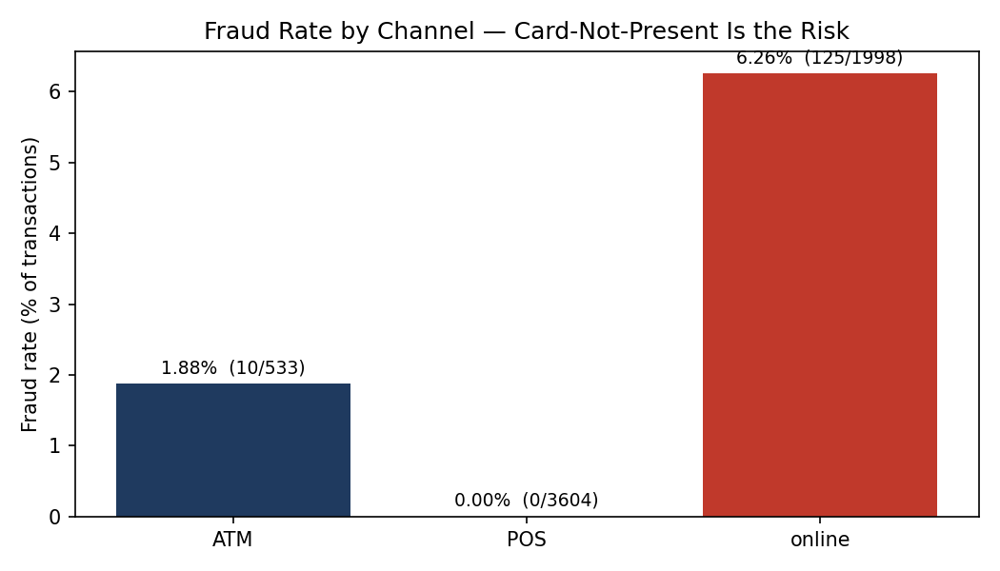
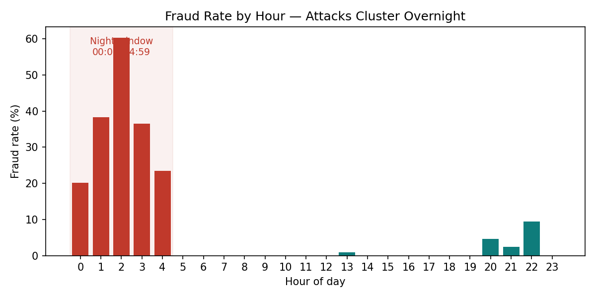
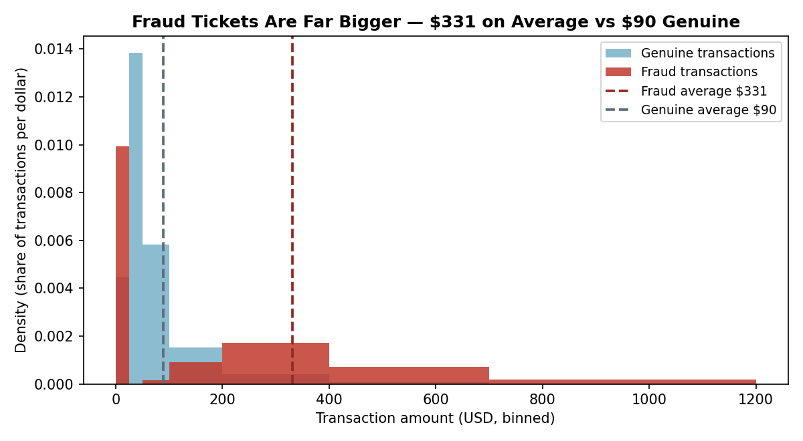
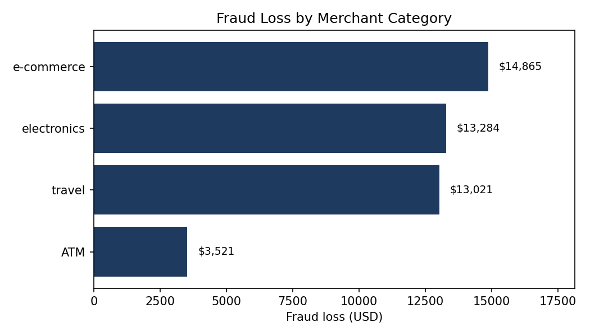

6,135Total Transactions
2.20% · 220 bpsFraud Rate (135 fraud)
$44,690Total Fraud Loss
$331 vs $90Avg Fraud vs Legit Ticket
92.6%Fraud via Online (CNP)
~88 · $29,049Est. Chargebacks (65% proxy)
44.73% / 78.52%Rule Precision / Recall
$41,916Est. Loss Prevented (93.8%)
Where the fraud hides
Fraud rate by channel

Fraud rate by hour

Fraud vs legitimate ticket sizes

Fraud loss by merchant category

Fraud by channel
| Channel | Transactions | Fraud | Fraud rate | Fraud loss | Share of fraud |
|---|---|---|---|---|---|
| Online (card-not-present) | 1,998 | 125 | 6.26% | $41,169.25 | 92.59% |
| ATM | 533 | 10 | 1.88% | $3,521.19 | 7.41% |
| POS (card-present) | 3,604 | 0 | 0.00% | $0.00 | 0.00% |
Rule performance — precision vs recall
| Rule | Flagged | True + | False + | Missed | Precision | Recall |
|---|---|---|---|---|---|---|
| R1 Amount threshold by category | 130 | 47 | 83 | 88 | 36.15% | 34.81% |
| R2 Online + foreign | 89 | 65 | 24 | 70 | 73.03% | 48.15% |
| R3 Night window 00:00–04:59, >$100 | 104 | 77 | 27 | 58 | 74.04% | 57.04% |
| R4 Velocity (3+ in 10 min per card) | 2 | 2 | 0 | 133 | 100.00% | 1.48% |
| Combined (any rule) | 237 | 106 | 131 | 29 | 44.73% | 78.52% |
Reading this table is the real analyst skill: R4 almost never fires but is never wrong; R1 catches volume but interrupts 83 good customers. Rule tuning is a business trade-off between fraud loss prevented and customer friction — not a pure accuracy contest.
Key insights
- Fraud is a card-not-present problem: 92.6% of fraud is online, at a 6.26% fraud rate vs 0% at POS in this dataset.
- Attacks cluster overnight: 83.7% of fraud lands between 00:00 and 04:59, when cardholders are asleep and slow to respond to alerts.
- Big-ticket categories bleed most: e-commerce ($14,865), electronics ($13,284) and travel ($13,021) hold nearly all fraud loss.
- The rule set prevents an estimated $41,916 (93.8% of fraud dollars) because it catches the large tickets — while missing 29 smaller frauds.
- Chargeback exposure: at a 65% conversion assumption, ~88 chargebacks costing ~$29,049 follow from the fraud that occurred.
Limitations: rule-based detection is transparent but static — it cannot learn new attack patterns and fraudsters adapt to fixed thresholds. Production issuers layer ML scoring on top of rules. Labels in real portfolios arrive weeks later via chargebacks and are noisy; here they are planted in synthetic data.